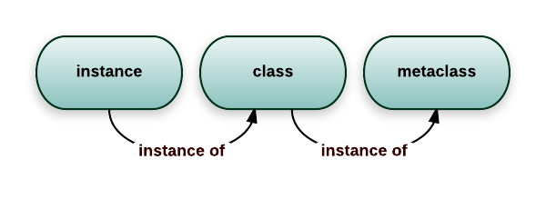

2. 什么是元类（metaclass）¶
题目¶
什么是元类，我们用它来干什么？链接
回答一¶
1）类作为对象¶
在理解元类之前，你需要掌握Python中的类(class)。对于类是什么，Python有独特的看法，这借鉴于Smalktalk。
在大部分语言中，类仅仅是描述如何去产生一个对象的代码片段，在Python中也一样。
>>> class ObjectCreator(object): ... pass ... >>> my_object = ObjectCreator() >>> print(my_object) <__main__.ObjectCreator object at 0x8974f2c>
但是类在Python中不仅仅是这样，类也是对象。
当你使用关键字class时，Python执行它并创建了一个对象。这个语句
>>> class ObjectCreator(object): ... pass ...
在内存中创建了一个名为“ObjectCreator”的对象。
这个对象（这个类）本身是能够创建对象（实例）的，这也是称之为类的原因。
但是，它仍然是一个对象，因此：
- 你可以把它赋值给一个变量；
- 你能复制它；
- 你能给它添加属性；
- 你能将它作为一个函数参数传递。
例如：
>>> print(ObjectCreator) # you can print a class because it's an object <class '__main__.ObjectCreator'> >>> def echo(o): ... print(o) ... >>> echo(ObjectCreator) # you can pass a class as a parameter <class '__main__.ObjectCreator'> >>> print(hasattr(ObjectCreator, 'new_attribute')) False >>> ObjectCreator.new_attribute = 'foo' # you can add attributes to a class >>> print(hasattr(ObjectCreator, 'new_attribute')) True >>> print(ObjectCreator.new_attribute) foo >>> ObjectCreatorMirror = ObjectCreator # you can assign a class to a variable >>> print(ObjectCreatorMirror.new_attribute) foo >>> print(ObjectCreatorMirror()) <__main__.ObjectCreator object at 0x8997b4c>
2）动态地创建类¶
因为类是对象，你能动态地创建它们，就像其他对象一样。
首先，你可以在一个函数中使用class创建一个类。
>>> def choose_class(name): ... if name == 'foo': ... class Foo(object): ... pass ... return Foo # return the class, not an instance ... else: ... class Bar(object): ... pass ... return Bar ... >>> MyClass = choose_class('foo') >>> print(MyClass) # the function returns a class, not an instance <class '__main__.Foo'> >>> print(MyClass()) # you can create an object from this class <__main__.Foo object at 0x89c6d4c>
但是这不够动态，因为你仍然需要去完整地定义这个类。
因为类是对象，它们肯定能用其他方式生成。
当你使用class这个关键字时，Python自动创建了这个对象。但是正如在Python中做的大部分事情一样，Python同样提供了手动触发的方式。
还记得函数type吗？一个古老而又有用的函数，能够让你知道一个对象的类型是什么。
>>> print(type(1)) <type 'int'> >>> print(type("1")) <type 'str'> >>> print(type(ObjectCreator)) <type 'type'> >>> print(type(ObjectCreator())) <class '__main__.ObjectCreator'>
type还有一个完全不同的功能，它也动态地创建对象。type能够接受一个类的描述作为参数，然后返回一个类。
type可以这样用：
type(name of the class, tuple of the parent class (for inheritance, can be empty), dictionary containing attributes names and values)
例如：
>>> class MyShinyClass(object): ... pass
能用这种方式手动创建。
>>> MyShinyClass = type('MyShinyClass', (), {}) # returns a class object >>> print(MyShinyClass) <class '__main__.MyShinyClass'> >>> print(MyShinyClass()) # create an instance with the class <__main__.MyShinyClass object at 0x8997cec>
你将注意到，我们使用”MyShinyClass“作为这个类的名称，同样作为变量的名称，并将类引用赋值给它。它们可能有点区别，但是没必要把事情搞复杂。
type接受一个字典去定义类的属性，因此：
>>> class Foo(object): ... bar = True
能这样表达
>>> Foo = type('Foo', (), {'bar':True})
而且被用来作为一个普通的类。
>>> print(Foo) <class '__main__.Foo'> >>> print(Foo.bar) True >>> f = Foo() >>> print(f) <__main__.Foo object at 0x8a9b84c> >>> print(f.bar) True
当然，你也能继承它，因此：
>>> class FooChild(Foo): ... pass
等价于
>>> FooChild = type('FooChild', (Foo,), {}) >>> print(FooChild) <class '__main__.FooChild'> >>> print(FooChild.bar) # bar is inherited from Foo True
最终，你需要添加给这个类添加一些方法。仅需要定义好函数，并将它赋值给一个属性即可。
>>> def echo_bar(self): ... print(self.bar) ... >>> FooChild = type('FooChild', (Foo,), {'echo_bar': echo_bar}) >>> hasattr(Foo, 'echo_bar') False >>> hasattr(FooChild, 'echo_bar') True >>> my_foo = FooChild() >>> my_foo.echo_bar() True
而且，甚至在类动态创建之后，你也能添加更多的方法，就像给一个普通创建的类对象添加方法一样。
>>> def echo_bar_more(self): ... print('yet another method') ... >>> FooChild.echo_bar_more = echo_bar_more >>> hasattr(FooChild, 'echo_bar_more') True
如你所见：在Python中，类也是对象，而且你能动态地创建一个类。
这就是当你使用class这个关键字时Python所做的，Python使用元类来完成这项工作。
3）什么是元类¶
元类就是我们创建对象的东东。
你定义一个类是为了创建对象，对吗？
但是刚才我们了解到了Python类也是对象。
元类是创建这些对象的东东。他们是类的类，你可以用这种方式去描述它。
MyClass = MetaClass() my_object = MyClass()
我们已经看到了type能让你像这样做。
MyClass = type('MyClass', (), {})
这是因为type这个函数事实上是一个元类。type是Python在背后用来创建所有类的元类。
现在你可能想知道，为什么type首字母要小写，而不是写成Type
我猜，这与语言一致性有关，例如str是创建字符串对象的类，int是创建整数对象d的类，type就是用来创建类对象的类。
你可以检查__class__属性看到。
在Python中一切皆对象。包括整数、字符串、函数和类。它们都是对象，而且它们都是由类产生的。
>>> age = 35 >>> age.__class__ <type 'int'> >>> name = 'bob' >>> name.__class__ <type 'str'> >>> def foo(): pass >>> foo.__class__ <type 'function'> >>> class Bar(object): pass >>> b = Bar() >>> b.__class__ <class '__main__.Bar'>
现在，如何__class__的__class__是什么呢？
>>> age.__class__.__class__ <type 'type'> >>> name.__class__.__class__ <type 'type'> >>> foo.__class__.__class__ <type 'type'> >>> b.__class__.__class__ <type 'type'>
因此，元类就是创建类对象的东东。
如果你愿意，可以称它为"类工厂"。
type是Python使用的内置的元类，当然，你也能创建自己的元类。
4）__metaclass__ 属性¶
当你定义一个类时，可以添加一个__metaclass__属性。
class Foo(object): __metaclass__ = something... [...]
如果你这样做的话，Python将使用这个元类去创建类Foo
小心，这有陷阱。
你首先写了class Foo(object)，但是这个类对象Foo在内存中并没有被创建。
Python将在类定义中寻找__metaclass__如果Python发现了它，Python将使用它去创建类对象Foo，如果没有，Python将使用type去创建这个类。
重温几次。
当你定义：
class Foo(Bar): pass
Python将做以下事情：
在Foo中有__metaclass__属性吗？
如果有，就使用__mataclass__中定义的东东在内存中创建类对象，类名为Foo。
如果Python没有找到__metaclass__属性，它将在MODULE层寻找一个__metaclass__，去做相同的事情（对于类，不继承任何东西，基础的老式类）。
然后如果Python不能找到任何的__metaclass__，它将使用Bar（第一个父类）自己的元类（可能是type）去创建类对象。
这里小心__metaclass__属性将不会被继承，父类的元类（Bar.__class__）会被继承。如果Bar使用了一个用type（不是type.__new__()）创建Bar的__metaclass__属性，那么它的子类将会继承这个行为。
现在最大的问题是，你能在__metaclass__中定义什么？
答案就是，能够创建类的东东。
什么能创建类呢？type，或者它的子类，或者用了它的任何东西。
5）自定义元类¶
元类的主要目的是为了创建时自动地改变类。
经常为了API这么做，API中需要创建类去匹配当前的上下文。
想象一个非常蠢的例子，你决定你的模块中的所有类它们的属性应该大写。有好几种方式可以完成这件事，其中一种方式就是在模块层设置__metaclass__。
使用这种方式，模块内所有的类都会使用这个元类创建，而且我们必须告诉元类要将所有的属性转为大写。
幸运的是，__metaclass__确实是可调用的，它不需要是一个正式的类（在名字中带有类，但是不必要是一个类，区分一下，但是这很有用）。
接下来我们使用函数写个简单的例子。
# coding=utf-8 # 适用于python2 # 元类将自动获取到相同的你经常传给`type`的参数。 # 即参数列表与`type`的一致。 def upper_attr(future_class_name, future_class_parents, future_class_attr): """ 将属性名转为大写后，返回一个类对象。 """ # 筛选出所有不以__开头的属性，转为大写。 uppercase_attr = {} for name, val in future_class_attr.items(): if not name.startswith('__'): uppercase_attr[name.upper()] = val else: uppercase_attr[name] = val # 使用type创建类 return type(future_class_name, future_class_parents, uppercase_attr) __metaclass__ = upper_attr # 这将影响这个模块内的所有类。 class Foo(): # 虽然全局的 __metaclass__ 对 “object”无效 # 但是我们可以在这里定义 __metaclass__ 而不是仅仅影响这个类。 # 这将影响“object”的children bar = 'bip' print(hasattr(Foo, 'bar')) # Out: False print(hasattr(Foo, 'BAR')) # Out: True f = Foo() print(f.BAR) # Out: 'bip'
现在，我们用一个真实的类作为元类去做相同的事情。
# coding=utf-8 # 记住`type`事实上是一个类似于`str`和`int`的类 # 所以你能继承它 class UpperAttrMetaclass(type): # __new__ 方法在 __init__ 前执行，这个方法创建对象并返回。 # __init__方法仅仅初始化作为参数传入的对象。 # 你很少使用__new__方法，除非你想控制类是如何创建的。 # 这里创建的对象是一个类，我们想自定义它，因此需要覆盖 __new__。 # 你也能在__init__中做一些事情，如果愿意的话。 # 一些高级用法还包括覆盖__call__方法，这里不使用。 def __new__(upperattr_metaclass, future_class_name, future_class_parents, future_class_attr): uppercase_attr = {} for name, val in future_class_attr.items(): if not name.startswith('__'): uppercase_attr[name.upper()] = val else: uppercase_attr[name] = val return type(future_class_name, future_class_parents, uppercase_attr)
事实上这并不OOP，我们直接调用了type函数，没有覆盖或者是调用父类的__new__，改一下：
# coding=utf-8 class UpperAttrMetaclass(type): def __new__(upperattr_metaclass, future_class_name, future_class_parents, future_class_attr): uppercase_attr = {} for name, val in future_class_attr.items(): if not name.startswith('__'): uppercase_attr[name.upper()] = val else: uppercase_attr[name] = val # 重用了type.__new__方法，这种写法是OOP的 return type.__new__(upperattr_metaclass, future_class_name, future_class_parents, uppercase_attr)
你可能注意到额外的参数upperattr_metaclass，这没什么特别的：__new__方法总是接受定义的类作为第一个参数，就像普通方法接受实例作为第一个参数传入self，类方法传入定义类一样。
当然，为了可读性，我在这里使用的名字太长了。但是就如self一样，所有的参数都有约定俗成的名字，因此一个真实的正式的metaclass应该像这样写：
class UpperAttrMetaclass(type): def __new__(cls, clsname, bases, dct): uppercase_attr = {} for name, val in dct.items(): if not name.startswith('__'): uppercase_attr[name.upper()] = val else: uppercase_attr[name] = val return type.__new__(cls, clsname, bases, uppercase_attr)
我们使用super让代码看上去更清晰一些，
class UpperAttrMetaclass(type): def __new__(cls, clsname, bases, dct): uppercase_attr = {} for name, val in dct.items(): if not name.startswith('__'): uppercase_attr[name.upper()] = val else: uppercase_attr[name] = val return super(UpperAttrMetaclass, cls).__new__(cls, clsname, bases, uppercase_attr)
以上就是全部了，关于元类已经没有什么内容了。
使用元类的代码复杂的原因并不在于元类本身，而是因为你经常使用元类去做一些扭曲的事情，操纵继承，遍历属性（vars）例如__dict__等等。
事实上，元类在做一些黑科技时非常有用，因此往往是一些复杂的东西。但是就元类本身而言，是简单的。
- 拦截类的创建。
- 修改类。
- 返回修改后的类。
6）为什么使用元类时用类而不用函数？¶
因为__metaclass__能够接受任何可调用的东西，为什么要去使用明显更为复杂的类呢？
这么做有几个原因：
- 目的更明确，当你阅读
UpperAttrMetaclass(type)，你知道接下来会发生什么。 - 更OOP。元类能够继承元类，覆盖父类的方法。元类甚至能使用元类。
- 一个类的子类可以是它的元类的实例如果你指定了一个元类类（metaclass-class），而不是一个元类函数（metaclass-function）。
- 能更好地组织代码。你从来没有像上面的例子这样试验性地使用元类。元类经常用于一些复杂场景。为了代码可读性，将好几个方法组织在一个类中的能力是非常重要的。
- 你能覆盖
__new__，__init__和__call__，这些方法将允许你做不同的事情。即时即经常只需要修改__new__，一些人觉得使用__init__更舒服。 - 它们被称为元类，实际就应该和它的名称一致。
7）为什么使用元类¶
现在最大的问题，为什么要使用这么晦涩的容易出错的特性？
通常不要用：
元类是深魔法，99%的用户都不需要关心它。如果你在想是否需要它们，就不要用（需要元类的人确切地知道需要它，无需解释）。 Python Guru Tim Peters
元类主要的使用场景是创建API，一个典型的例子是Django的ORM。
它允许你去这样定义：
class Person(models.Model): name = models.CharField(max_length=30) age = models.IntegerField()
但是如果你这样做：
guy = Person(name='bob', age='35') print(guy.age)
它将不会返回一个IntegerFiled对象，它将返回一个int，而且甚至直接传给数据库。
这是可能的，因为models.Model定义了__metaclass__而且进行了一些特殊处理，将你刚刚简单几句话定义的Person转变为数据库字段的复杂钩子。
Django通过使用元类暴露简单的API，让一些复杂的事情看上去简单，通过这些API背后重新创建代码去做真实的事情。
8）最后一点¶
首先，你知道类是能够创建实例的对象。
事实上，类本身就是对象，元类也是。
>>> class Foo(object): pass >>> id(Foo) 142630324
Python中一切皆对象，而且他们也是类的实例或类的实例。
除了type
type确实是自己的元类，这只用Python是产生不了的，这是在实现层面做的。
第二，元类是复杂的。你可能想去使用他们去做简单的类修改。你能使用2种其他的技术去做这件事。
- 猴子补丁（monkey patching）
- 类装饰器（class decorators）
类修改99%的场景适合以上方式。
但是98%的场景，根本不需要去修改类。
9）Python3补充¶
Python3和Python2中元类使用有区别。
以下是使用元类实现追踪类定义顺序的例子。
class MyMeta(type): counter = 0 def __init__(cls, name, bases, dic): type.__init__(cls, name, bases, dic) cls._order = MyMeta.counter MyMeta.counter += 1 class MyType(object): # Python 2 __metaclass__ = MyMeta class MyType(metaclass=MyMeta): # Python 3 pass
Python3中元类有2个关键的方法。
__prepare____new__
__prepare__让你提供一个自定义的字典（例如OrderedDict）作为元类创建时的命名空间。无论选择什么命名空间，都必须返回一个实例。如果没有实现__prepare__，将会使用一个普通的dict。
class Meta(type): def __prepare__(metaclass, cls, bases): return dict() def __new__(metacls, cls, bases, clsdict): return super().__new__(metacls, cls, bases, clsdict)
回答二¶
元类是类的类。就像一个类定义了类的一个实例的行为，一个元类定义了一个类的行为。类是元类的实例。 
在Python中，你可以使用任意的可调用的元类(如Jerub的回答)，更有用的方法实际上是使它本身成为一个实际的类。类型（type）是Python中常用的元类。正如你所想的那样，type本身就是一个类，它是它自己的类型。你将无需在Python中重新创建类似于type的东西，但是Python有一点有一定的欺骗性。要在Python中创建自己的元类，你实际上只需要子类化type。
元类通常用作类工厂。就像你通过调用类创建类的实例一样，Python通过调用元类创建一个新类(当它执行“类”语句时)。与常用的__init__和__new__方法相结合，元类允许你在创建类时做“额外的事情”，比如注册新的类和一些注册表，甚至完全替换类。
在执行class语句时，Python首先将class语句的主体作为正常的代码块执行。由此产生的命名空间(一个命令)包含将呈现的类的属性。元类是通过查看将呈现的类的基类(元类继承的)，在其__metaclass__属性(如果有)或__metaclass__全局变量来确定的。然后使用类的名称、基础和属性调用元类来实例化它。
然而，元类实际上定义了类的类型，而不仅仅是它的工厂，因此你可以与它们做更多的事情。例如，你可以在元类上定义常规方法。这些元类方法类似于类方法，因为它们可以在没有实例的类上调用它们，但是它们也不像类方法，因为它们不能在类的实例上调用它们。__subclasses__()是在type元类上的一个方法的例子。你还可以定义普通的“魔术”方法，例如__add__、__iter__和__getattr__，以实现或更改类的行为。
下面是一些零碎的例子:
def make_hook(f): """Decorator to turn 'foo' method into '__foo__'""" f.is_hook = 1 return f class MyType(type): def __new__(mcls, name, bases, attrs): if name.startswith('None'): return None # Go over attributes and see if they should be renamed. newattrs = {} for attrname, attrvalue in attrs.iteritems(): if getattr(attrvalue, 'is_hook', 0): newattrs['__%s__' % attrname] = attrvalue else: newattrs[attrname] = attrvalue return super(MyType, mcls).__new__(mcls, name, bases, newattrs) def __init__(self, name, bases, attrs): super(MyType, self).__init__(name, bases, attrs) # classregistry.register(self, self.interfaces) print "Would register class %s now." % self def __add__(self, other): class AutoClass(self, other): pass return AutoClass # Alternatively, to autogenerate the classname as well as the class: # return type(self.__name__ + other.__name__, (self, other), {}) def unregister(self): # classregistry.unregister(self) print "Would unregister class %s now." % self class MyObject: __metaclass__ = MyType class NoneSample(MyObject): pass # Will print "NoneType None" print type(NoneSample), repr(NoneSample) class Example(MyObject): def __init__(self, value): self.value = value @make_hook def add(self, other): return self.__class__(self.value + other.value) # Will unregister the class Example.unregister() inst = Example(10) # Will fail with an AttributeError #inst.unregister() print inst + inst class Sibling(MyObject): pass ExampleSibling = Example + Sibling # ExampleSibling is now a subclass of both Example and Sibling (with no # content of its own) although it will believe it's called 'AutoClass' print ExampleSibling print ExampleSibling.__mro__